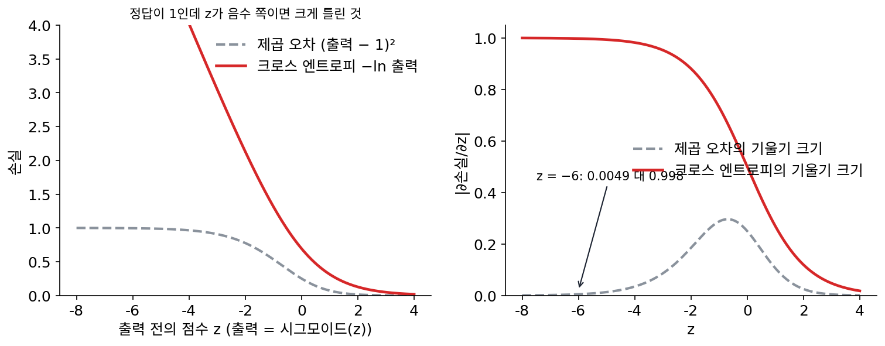
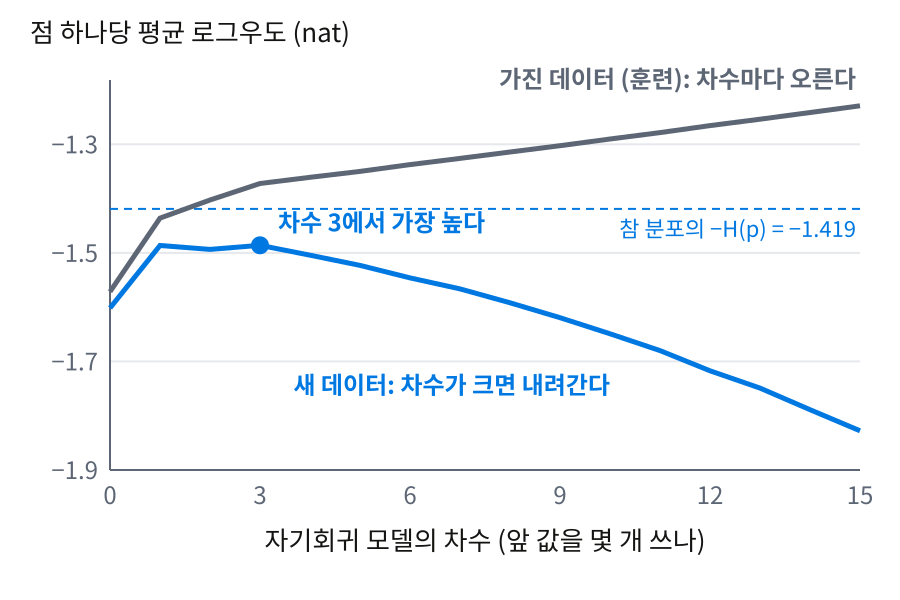
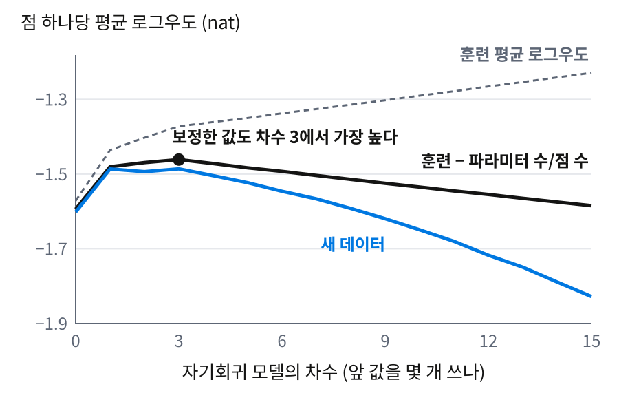
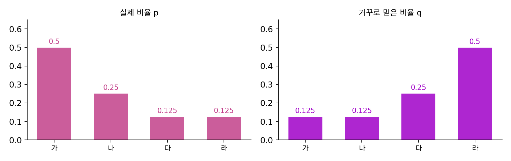
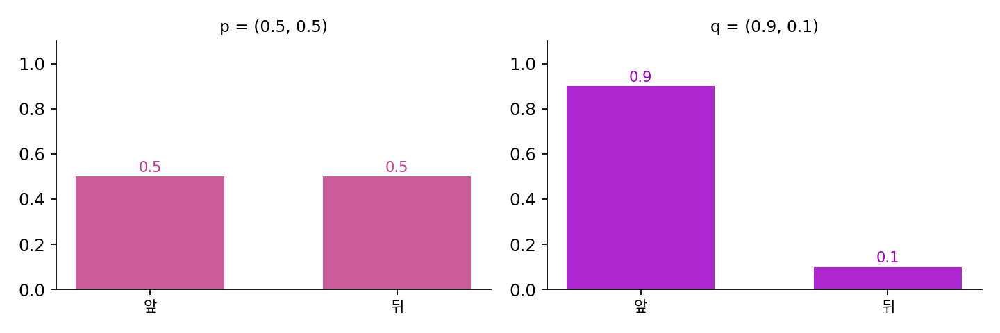
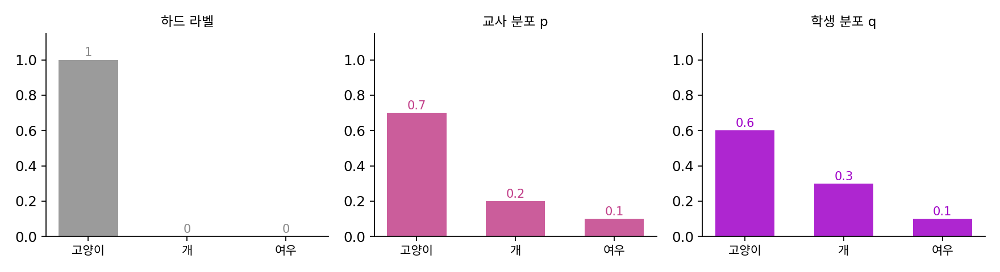

크로스 엔트로피와 KL 발산: 잘못된 코드표로 더 쓰는 비트
엔트로피가 바닥이 되려면 결과마다 실제 확률 p의 놀라움 −log₂ p만큼 길이를 주어야 한다. 그런데 우리는 실제 확률을 모른다. 날씨를 보내는 사람은 지난 기록으로 추정한 비율을 믿고 코드표를 만들고, 분류 모델은 학습으로 얻은 확률 q를 낸다. 믿은 확률 q로 길이를 정했는데 결과는 실제 확률 p로 나온다면, 평균 몇 비트가 들고 바닥보다 얼마나 더 쓰게 될까?
역사: 제곱 오차에서 상대 엔트로피로
1986년 역전파가 널리 알려진 뒤 몇 해 동안, 층을 쌓은 신경망은 대개 출력과 정답의 차이를 제곱해 더한 제곱 오차로 학습시켰다. 회귀에서 오래 쓰던 척도라 자연스러웠지만, 출력이 0과 1 사이로 눌린 시그모이드 단위일 때는 학습이 한동안 멈춘 듯 더디게 가는 일이 잦았다. 정답이 1인데 출력이 0 근처로 크게 틀려 있으면 시그모이드의 기울기가 거의 0이라, 제곱 오차가 커도 파라미터를 고칠 신호가 거의 오지 않기 때문이다.
1988년 AT&T 벨 연구소의 솔라(Sara A. Solla)와 이스라엘 테크니온의 레빈(Esther Levin)·플라이셔(Michael Fleisher)는 『Complex Systems』에 실은 「층을 쌓은 신경망의 빠른 학습(Accelerated Learning in Layered Neural Networks)」에서 출력과 목표를 확률로 읽자고 제안했다. 그렇게 읽으면 두 분포의 차이를 측정하는 자연스러운 척도는 제곱 오차가 아니라 상대 엔트로피, 지금 이름으로 KL 발산이고, 목표 분포가 정해져 있으면 그것을 줄이는 일은 크로스 엔트로피를 줄이는 일과 같다. 그들은 이웃한 1의 덩어리 수를 세는 문제로 두 척도를 비교해 학습 시간이 크게 준다는 것을 보였으며, 오차 지형이 상대 엔트로피 쪽에서 더 가파르기 때문이라고 설명했다.


손실 함수 하나 바꾼 걸로 논문이 됐다는 게 신기해요. 지금은 분류면 크로스 엔트로피가 당연하잖아요.

그때는 그게 당연하지 않았어요. 제곱 오차는 가우스 시절부터 써 온 척도였고, 역전파 논문의 실험도 제곱 오차였어요. 왜 바꿔야 하는지를 보이려면 무엇이 필요했을까요?

출력을 확률로 읽어도 된다는 근거요. 시그모이드 출력이 0과 1 사이라고 해서 확률이라는 보장은 없잖아요. 그걸 확률로 보면 척도가 저절로 바뀌는 거고요.

그리고 실제로 빨라진다는 실험이요. 그때 컴퓨터로 작은 신경망 하나를 학습시키는 데도 한참 걸렸으니, 학습 시간이 준다는 건 큰 이야기였어요.

그림 오른쪽을 보니 이유가 바로 보이네요. 크게 틀렸을 때 제곱 오차는 기울기가 0.005라 거의 안 움직이고, 크로스 엔트로피는 1에 가까워요. 틀릴수록 세게 고치라는 신호가 오는 거네요.
그럼 「출력을 확률로 읽으면 크로스 엔트로피가 자연스럽다」는 말을 비트로 풀면 무엇일까요? 잘못 믿은 확률로 코드표를 만드는 장면에서 시작해 봐요.
약어 사전: 잘못 믿고 만든 코드표
네 가지 말 「가」「나」「다」「라」를 0과 1로 적어 보내는데, 실제로는 1/2, 1/4, 1/8, 1/8의 비율로 나온다고 하자. 비율을 안다면 흔한 말에 짧은 코드를 주어 가 0, 나 10, 다 110, 라 111로 적고, 한 말에 평균 1.75자리, 엔트로피와 같은 1.75비트가 든다. 비율을 모르고 넷이 똑같이 나온다고 믿었다면 모두 두 자리(00, 01, 10, 11)를 주었을 것이고, 한 말에 2자리가 든다. 그 가운데 1.75자리는 비율을 알았어도 들었을 자릿수이고, 나머지 0.25자리는 잘못 믿은 탓에 더 쓴 자릿수다.
믿은 확률 q로 만든 코드의 길이는 −log₂ q, 곧 q를 믿는 사람의 놀라움이다. 그런데 어느 말이 얼마나 자주 오는지는 실제 확률 p가 정하므로, 평균은 p로 내야 한다. 이렇게 실제 확률로 평균 낸, 믿은 확률의 놀라움을 크로스 엔트로피 (잘못 믿은 코드표의 평균 길이, cross entropy)라 하고, 크로스 엔트로피에서 엔트로피를 뺀 덤을 KL 발산(Kullback–Leibler divergence, 쿨백과 라이블러가 1951년에 정의)이라 부른다.
KL의 식을 결과마다 풀면 log₂(pᵢ/qᵢ) = (−log₂ qᵢ) − (−log₂ pᵢ)이다. 결과 i가 왔을 때 믿은 사람이 받은 놀라움에서 실제 확률을 아는 사람의 놀라움을 뺀, 「괜히 더 놀란 양」이고, KL은 그 양을 실제 빈도로 평균 낸 것이다. 어느 결과에서는 이 차이가 음수일 수 있어서, 균등하게 믿은 코드표에서 「다」는 3자리 대신 2자리를 받아 한 자리 득을 본다. 그래도 평균하면 늘 0 이상이고, 믿음이 실제와 같을 때만 0이다. 잘못 믿고도 바닥보다 짧게 적는 코드는 없다는 뜻이다.

KL이 늘 0 이상이라는 것은 −log가 아래로 볼록하다는 성질 하나에서 나오는데, 이 장에서는 결과만 쓴다. 또 KL은 두 분포를 바꿔 넣으면 값이 달라진다. 실제가 (0.5, 0.5)인데 (0.9, 0.1)을 믿으면 KL이 0.737비트이고, 실제가 (0.9, 0.1)인데 (0.5, 0.5)를 믿으면 0.531비트다(문제 8). 어느 쪽이 실제이고 어느 쪽이 믿음인지가 비트 수를 바꾸므로, KL을 두 분포 사이의 거리처럼 읽으면 안 된다. 믿음 q가 실제로 일어나는 결과에 0을 주면 그 결과의 코드 길이가 끝이 없어 크로스 엔트로피도 KL도 무한대가 된다. 일어날 수 있는 일을 「불가능」이라 믿은 코드표로는 그 일을 아예 적지 못한다.
역사: 아카이케와 기대 로그우도
자료에 잘 맞는 모델을 선택하는 일이 KL을 줄이는 일이라는 다리는 모델의 크기를 정하는 고민에서 놓였다. 1960년대 말 일본 통계수리연구소의 아카이케 히로츠구(赤池弘次, Hirotugu Akaike)는 시멘트 회전 가마를 컴퓨터로 제어하는 공동 연구에서, 가마에서 측정한 시계열의 다음 값을 바로 앞 값 몇 개의 가중합으로 예측하는 자기회귀 모델을 썼다. 앞 값을 몇 개까지 쓸지(차수)가 문제였다. 차수를 늘리면 가진 자료에는 늘 더 잘 맞지만, 새로 들어올 자료의 예측은 어느 차수부터 오히려 나빠진다. 1969년 그는 새 자료에서의 예측 오차 제곱을 추정한 기준(최종 예측 오차, FPE)으로 차수를 선택했는데, 이 기준은 자기회귀 모델의 예측 오차에 맞춘 것이었다.

아카이케는 모델의 형태에 매이지 않는 기준을 찾았다. 1971년 9월 소련 아르메니아의 차하조르에서 열린 제2회 국제 정보이론 심포지엄에서 그는 「고전적인 최대우도 원리는 매우 일반적인 정보이론적 기준에 대해 최적 추정을 점근적으로 실현하는 방법으로 볼 수 있다」고 발표했다(논문집은 1973년에 나왔다). 그가 내세운 기준은 새 자료에서의 기대 로그우도, 이 절의 기호로 Σ p ln q였다. 기대 로그우도는 −H(p, q) = −H(p) − KL(p‖q)이므로(nat으로 측정한 값), 기대 로그우도를 키우는 것은 참 분포에서 모델까지의 KL을 줄이는 것과 같다. 쿨백과 라이블러가 1951년에 두 가설을 판별하는 평균 정보로 정의한 바로 그 양이다. 가진 자료로 측정한 평균 로그우도는 기대 로그우도를 부풀려 추정하므로, 아카이케는 부풀린 만큼을 파라미터 수로 보정한 기준을 내놓고 처음에는 「an information criterion」이라 불렀다. 오늘날의 AIC다.

처음 유도는 가정이 강했다. 1976년 다케우치 게이(竹内啓, Kei Takeuchi)가 가정을 크게 늦춘 판을 냈지만 일본어로 나와 오래 알려지지 않았다.
차수를 선택하는 거면 자료를 떼어서 검증셋으로 측정해 보면 되잖아요. 수업 실습에서는 늘 그렇게 했는데요.
위 그림의 실험처럼 시계열이 길이 60뿐이라고 해 봐요. 그중 20개를 검증용으로 떼면 무슨 일이 생길까요?
피팅하는 데 쓸 점이 줄어요. 차수 15짜리는 계수만 15개인데… 점이 모자라서 차수가 높은 모델일수록 손해를 보겠네요.
자료를 떼면 측정하는 모델이 실제로 쓸 모델과 달라지는 거예요. 가진 자료를 다 쓰면서 새 자료에서의 성적을 알아내야 했어요.

그런데 가진 자료에서는 차수를 올릴수록 점수가 계속 오르잖아요. 그 점수로는 선택할 수가 없고요.

그래서 부풀려진 만큼을 파라미터 수로 깎았구나. 그런데 깎은 값이 새 자료 점수를 따라간다는 건 어떻게 믿어요?
아카이케가 기준으로 삼은 건 새 자료에서의 기대 로그우도였어요. 그게 크로스 엔트로피에 마이너스를 붙인 값이라는 건 방금 봤죠.

기대 로그우도가 −H(p, q)라면, 최대우도로 학습하는 것도 KL(p‖q)를 줄이는 일이라고 말할 수 있어요?
ML에서: 분류 손실, 언어 모델 손실, 증류
분류 모델의 학습 손실이 크로스 엔트로피라 불리는 것은 H(p, q) = Σ p(−log q)의 형태 그대로이기 때문이다. 사진 한 장의 정답 라벨을 확률 1짜리 분포로 보면 H(p, q)는 정답에 준 확률의 놀라움 하나가 되고, 학습 자료 전체로 평균 내면 자료의 경험 분포(사진마다 같은 무게를 준 분포)와 모델 분포 사이의 크로스 엔트로피가 된다. 경험 분포의 엔트로피는 모델과 상관없으므로, 크로스 엔트로피를 줄이는 일은 경험 분포에서 모델까지의 KL을 줄이는 일이고, 모델이 학습 자료에 준 로그 확률을 키우는 최대우도 추정과 같은 일이다. 언어 모델도 같아서, 토큰마다 정답 토큰에 준 확률의 놀라움을 평균 낸 것이 손실이다. 그 손실이 실제 비트열의 길이와 어떻게 이어지는지, nat과 바이트당 비트를 어떻게 바꾸는지는 코드 길이를 실제로 만드는 이야기에서 다룬다.
목표가 확률 1짜리 라벨이 아니라 다른 모델이 낸 분포일 때도 있다. 힌턴(Geoffrey Hinton)·비냘스(Oriol Vinyals)·딘(Jeff Dean)의 「신경망의 지식 증류(Distilling the Knowledge in a Neural Network)」(2015)는 큰 모델(교사)이 낸 확률을 작은 모델(학생)의 목표로 썼다. 손글씨 2를 보고 「3일 확률은 아주 작지만 7일 확률보다는 크다」는 교사의 판단이 하드 라벨에는 없는 정보라는 것이다. 그들은 소프트맥스의 온도를 20까지 올려 교사의 분포를 부드럽게 펴고, 학생이 그 분포와의 크로스 엔트로피를 줄이게 했다. 손글씨 숫자(MNIST)에서 은닉층 둘에 단위가 800개씩인 작은 신경망은 그냥 학습시키면 시험 오류가 146개였는데, 교사의 분포를 함께 맞추게 하자 74개로 줄었다(교사는 67개). 목표가 교사 분포 p이면 손실은 H(p) + KL(p‖q)이고, 학생이 줄일 수 있는 것은 KL뿐이다(문제 9).
문제 7. 거꾸로 믿은 코드표
약어 사전의 네 말 「가」「나」「다」「라」는 실제로 1/2, 1/4, 1/8, 1/8의 비율로 나오는데, 누군가 비율을 거꾸로 1/8, 1/8, 1/4, 1/2로 믿고 코드표를 만들었다. (가) 말마다 몇 자리 코드를 주었겠는가? 한 말에 평균 몇 자리가 드는가? (나) 잘못 믿은 탓에 더 쓴 자릿수는 몇 비트인가? 넷을 균등하게 믿었을 때의 0.25비트와 비교해라.

(가)는 믿은 비율로 −log₂ q를 주면 가 3자리, 나 3자리, 다 2자리, 라 1자리예요.
평균은 (3 + 3 + 2 + 1) ÷ 4 = 2.25자리. 균등하게 믿은 2자리보다 0.25 많네.
그 평균은 네 말이 얼마나 자주 나온다고 보고 낸 거예요?
아, 넷을 똑같이 쳤어요. 실제로는 가가 절반이니까 ½·3 + ¼·3 + ⅛·2 + ⅛·1 = 2.625자리예요. 코드 길이는 믿은 비율이 정하고, 평균은 실제 비율로 내야 하는구나.
그럼 더 쓴 건 2.625 − 1.75 = 0.875비트야. 균등하게 믿은 0.25비트의 세 배가 넘어. 모르는 것보다 거꾸로 아는 게 훨씬 비싸네.

그래요. 균등하게 믿는 건 「모른다」고 인정한 코드표라 흔한 말에 손해를 조금씩 보는데, 거꾸로 믿으면 가장 흔한 말에 가장 긴 코드를 줘요. 크로스 엔트로피의 로그 안에는 믿은 q가, 앞의 무게에는 실제 p가 오는 이유가 여기 있어요.

처음 가는 동네에서 길을 모르면 지도를 보며 조금씩 헤매는데, 잘못 안다고 믿으면 반대쪽으로 한참 걸어가 버리는 거랑 같네요.
문제 8. 두 분포를 바꿔 넣으면
동전의 실제 분포가 p = (0.5, 0.5)이고 모델이 q = (0.9, 0.1)을 믿는다. (가) H(p), H(p, q), KL(p‖q)를 비트로 구하라. (나) 거꾸로 실제가 (0.9, 0.1)이고 (0.5, 0.5)를 믿을 때의 KL(q‖p)를 구해 비교해라. (다) 모델이 q = (1, 0)을 믿으면 KL(p‖q)는 어떻게 되는가? 반대 방향 KL은?

(가)는 H(p) = 1비트. H(p, q)는 0.5 × (−log₂ 0.9) + 0.5 × (−log₂ 0.1) = 0.076 + 1.661 = 1.737비트. KL은 차이니까 0.737비트예요.
(나)도 같은 두 분포니까 KL은 0.737로 같겠지. 두 분포가 얼마나 떨어졌는지 측정하는 거니까.
계산해 볼까요? 이번에는 평균의 무게가 (0.9, 0.1)이에요.

0.9 × log₂(0.9/0.5) + 0.1 × log₂(0.1/0.5) = 0.763 − 0.232 = 0.531비트요. 다르네요. 두 분포가 같아도 어느 쪽으로 평균을 내느냐가 달라서 값이 바뀌어요. 거리처럼 생각한 게 틀렸어요.
왜 (가) 쪽이 더 클까요? 어느 결과에서 많이 잃는지 보세요.
결과마다 나눠 볼게요. (가)는 실제로 절반이나 나오는 뒷면에 모델이 0.1만 줘서, 뒷면이 올 때마다 log₂(0.5/0.1) = 2.32비트씩 더 써요. (나)는 모델이 0.5를 믿고 실제는 0.1인 결과가 드물게만 나오니까 손해가 덜 쌓이고요.
(다)는 q = (1, 0)이면 뒷면의 코드 길이가 −log₂ 0, 끝이 없어요. KL(p‖q)는 무한대. 반대 방향은 0이 아닌 칸만 더하니까 1 × log₂(1/0.5) = 1비트예요.

그래요. 실제로 일어나는 일에 0을 준 믿음은 한 방향으로는 무한히 비싸고, 다른 방향으로는 1비트뿐이에요. 분류 모델의 출력에 소프트맥스를 쓰면 어떤 클래스에도 정확히 0을 주지 않아 손실이 무한대로 가지 않고요.
문제 9. 교사의 분포를 따라 배우는 학생
고양이, 개, 여우를 구분하는 문제에서 어떤 사진의 정답은 고양이다. 교사 모델은 이 사진에 (0.7, 0.2, 0.1)을, 학생 모델은 (0.6, 0.3, 0.1)을 낸다. (가) 하드 라벨로 측정한 학생의 손실(비트)은? (나) 교사 분포를 목표로 측정한 크로스 엔트로피와 그 가운데 학생이 줄일 수 있는 부분은? (다) 학생이 고양이에 0.98을 주도록 바뀌면, 두 손실은 각각 어떻게 되는가? 어느 손실로 학습시키면 학생이 무엇을 더 배우는가?

(가)는 정답 고양이에 0.6을 줬으니 −log₂ 0.6 = 0.737비트예요.
(나)는 0.7 × (−log₂ 0.6) + 0.2 × (−log₂ 0.3) + 0.1 × (−log₂ 0.1)이라 1.196비트. 교사 분포의 엔트로피가 1.157비트니까, 학생이 줄일 수 있는 KL은 0.039비트뿐이야.
(다)에서 학생이 고양이에 0.98을 주면요?

하드 라벨 손실은 −log₂ 0.98 = 0.029비트로 확 줄어요. 교사 분포로 측정하면… 2.014비트로 오히려 커지네요. KL이 0.857이에요.

하드 라벨로는 좋아졌는데 교사 쪽으로는 나빠졌다니, 둘 가운데 무엇이 맞는 거예요?
학생이 0.98을 주면서 무엇을 버렸는지 보세요. 교사는 개에 0.2, 여우에 0.1을 줬어요.

개와 여우를 둘 다 0.01로 눌러 버렸어요. 「이 고양이는 여우보다는 개를 닮았다」는 교사의 판단이 사라진 거네요. 하드 라벨은 그 차이를 모르니까 0.98이 더 좋다고 하고, 교사 분포는 그걸 알고 있으니까 나빠졌다고 하고요.
그래요. 교사 분포를 목표로 하면 학생은 정답만이 아니라 틀린 답들 사이의 순서까지 배워요. 힌턴 등이 온도를 올려 교사 분포를 펴 준 것도 작은 확률들 사이의 차이가 손실에 드러나게 하려는 것이었어요. 그러면 교사가 줄 수 있는 비트가 하드 라벨보다 얼마나 많을지, 그 값을 측정하는 방법은 무엇일까요?